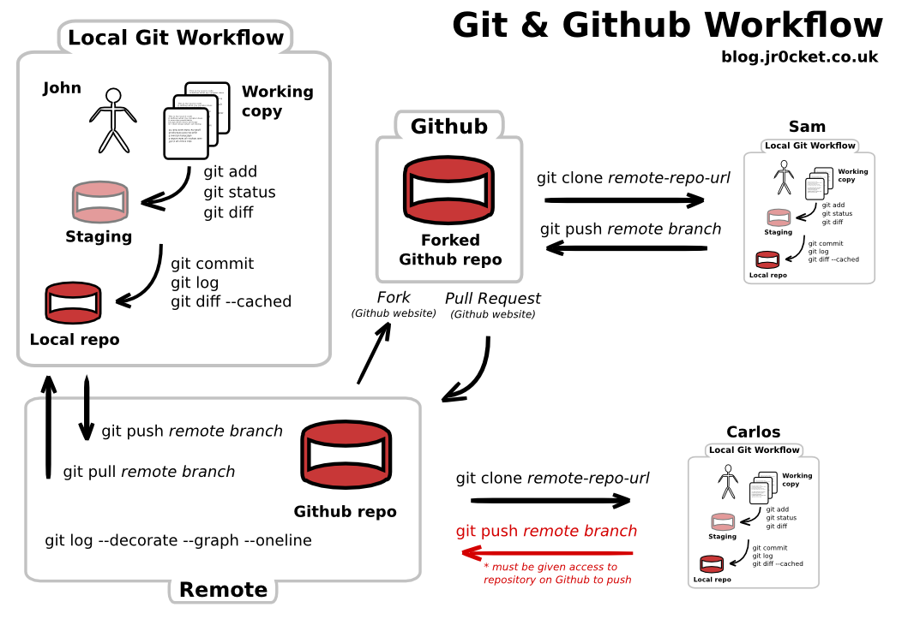

git config --global user.email "mtorres@ual.es"
git config --global user.name "Manuel Torres Gil"Git
Seminarios DI Febrero 2016
Qué es Git
Git is a distributed version control system designed to handle everything from small to very large projects with speed and efficiency.
— https://git-scm.com/
Configuración local
Configuración almacenada en ~/.gitconfig
Configuración remota (GitHub)
Crear cuenta
Criterio Username:
ual + loginUALEjemplos:
ualjbaron,ualjjcanadaualmtorres
Modificar Settings
Profile: Cambiar Company y Location
SSH Keys (Evitan introducir login y pass en cada
push)
¿No tienes SSH Key?

Paso 1. Crear SSH Key:
$ ssh-keygen
Esto genera dos archivos:
Clave privada:
id_rsaClave pública:
id_rsa.pub
Paso 2. Actualizar SSH Key en GitHub
Copiar contenido id_rsa.pub en GitHub
$ cat ~/.ssh/id_rsa.pub
git init
Crear repo local en carpeta de proyecto
$ git init
>>> Initialized empty Git repository in
/home/clouduser/Documents/prueba/.git/Working dir, Staging Area y Repo

git clone
Clonar un repo remoto (bare) en nuestro equipo

Ejemplo
Crear repo
pruebaen GitHubClonar repo remoto en equipo
git clone URL [folderName]
Crear archivo
README.adoc
Repositorios Git

git status
Muestra las diferencias entre el Working dir, la Staging Area y el repo.
$ git status
On branch master
Initial commit
Untracked files:
(use "git add <file>..." to include in what will be committed)
README.adoc
nothing added to commit but untracked files present
(use "git add" to track)git add
Añadir de Working dir a Staging area (index)
git add filesEjemplos
git add README.adocgit add .git add --all
git commit
Añadir de Staging Area a repo
git commit -m commitTextEjemplo
git commit -m "README.doc creado"
git push
Enviar cambios a repo remoto
git push remoto ramaLocalEjemplo
git push origin master
Escenario Colaborativo

origin y upstream

Otras alternaticas a GitHub
GitHub ofrece repos públicos
GitHub ofrece un plan de repos privados para docencia
BitBucket es otra alternativa (permite repos privados)
Diferencias
GitHub: Limita el número de repos. Usuarios ilimitados
BitBucket: Limita el número de usuarios. Repos ilimitados
GitLab DI
Repos privados y recursos propios
Acceso vía LDAP DI
Recursos
Git Immersion (http://gitimmersion.com/)